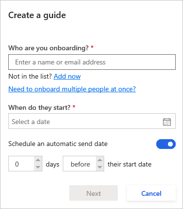
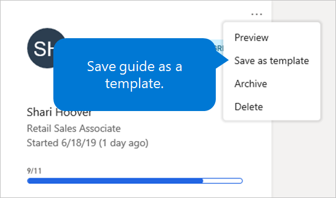

Erstellen und versenden eines Onboarding-Leitfadens
Important
Dynamics 365 Talent: Attract- und Onboard-Apps werden eingestellt. Weitere Informationen finden Sie unter Einstellen von Dynamics 365 Talent: Attract- und Onboard-Apps.
Microsoft Dynamics 365 Talent: Onboard lässt Sie Onboarding Anleitungen von Vorlagen erstellen, die Sie selbst erstellt haben, von Vorlagen, die in einem Katalog verfügbar ist, oder von Grund auf neu.
Nachdem Sie ein Onboarding Handbuch erstellt haben, können Sie diese an einen neuen Mitarbeiter senden. Alternativ können Sie es an mehrere neue Mitarbeiter senden, die Sie in einer Microsoft Excel Datei angeben, die Sie von der Onboard-App herunterladen.
Erstellen Sie ein Onboarding Handbuch aus einer Vorlage und senden Sie dieses an einen einzelnen neuen Mitarbeiter
Wählen Sie im linken Menü Vorlagen aus.
Wählen Sie unter Meine Vorlagen die Vorlage aus, die Sie als Onboarding Handbuch für die neuen Mitarbeiter einrichten möchten.
Bearbeiten Sie die Vorlage, wie Sie es wünschen. Denken Sie daran, Ihre Arbeit regelmäßig zu speichern.
Klicken Sie abschließend auf die Vorlage und wählen Sie Anleitung erstellen.
Im Fenster Erstellen Sie Anleitungen unter für wen ist das Onboarding, geben Sie den Namen oder die neue E-Mail-Adresse des neuen Mitarbeiters ein. Wenn der neue Mitarbeiter noch nicht im System ist, wählen Sie Jetzt hinzufügen, und geben Sie die Informationen des Mitarbeiters ein.

Wählen Sie unter Wann beginnen sie ein Startdatum aus.
Wenn das Onboarding Handbuch automatisch an einen neuen Mitarbeiter zu einem bestimmten Zeitpunkt gesendet wird, stellen Sie sicher, dass die Option Planen Sie ein automatisches Sendedatum aktiviert ist, und wählen Sie dann das automatische Sendedatum aus. Um die Anleitung sofort zu senden, deaktivieren Sie die Option Ein automatisches Sendedatum planen aus.
Wählen Sie Fertig.
Wenn Sie fertig sind, das Onboarding Handbuch zu bearbeiten, wählen Sie in der rechten Ecke Senden. Folgen Sie dann diesen Schritten:
- Um dem neuen Mitarbeiter einen Link zum Onboarding Handbuch zu senden, und wählen Sie kopieren Sie einen Link und dann Kopieren aus.
- Um die E-Mail für das Onboarding Handbuch anzupassen bevor Sie es senden, wählen Sie Passen Sie die E-Mail an, bevor Sie übermitteln, wählen Sie Weiter, um die E-Mail, die Sie anpassen möchten und wählen Sie Senden aus.
- Um die E-Mail ohne Anpassung zu senden, wählen Sie Weiter und dann Senden aus.
{kind=link}
Erstellen Sie ein Onboarding Handbuch aus einer Vorlage und senden Sie dieses an mehrere neue Mitarbeiter
Mit Onboard können Sie ein Onboarding Handbuch zu mehreren Neueinstellungen gleichzeitig senden.
Wählen Sie im linken Menü Vorlagen aus.
Wählen Sie unter Meine Vorlagen die Vorlage aus, die Sie als Onboarding Handbuch für die neuen Mitarbeiter einrichten möchten.
Bearbeiten Sie die Vorlage, wie Sie es wünschen. Denken Sie daran, Ihre Arbeit regelmäßig zu speichern.
Klicken Sie abschließend auf die Vorlage und wählen Sie Anleitung erstellen.
Im Fenster Erstellen einer Anleitung wählen Sie Mehre Personen auf einmal onboarden.
Wählen Sie neue Einstellungsvorlage aus.
Nachdem die .XLSX-Datei heruntergeladen wurde, wählen Sie Öffnen aus, geben Sie die Informationen zu den Mitarbeiter in der Excel-Arbeitsmappe ein, und speichern Sie die Arbeitsmappe.
Note
Damit Sie die Arbeitsmappe bearbeiten können, müssen Sie Aktivieren der Bearbeitung in Excel auswählen.
Ziehen Sie die Excel-Arbeitsmappe in den ausgewählten Bereich im Fenster Erstellen Sie mehrere Anleitungen, oder klicken Sie an beliebiger Stelle in diesem Bereich, um die Datei auf dem Computer zu suchen.
Wenn Sie fertig sind, das Onboarding Handbuch zu bearbeiten, wählen Sie in der rechten Ecke Senden. Folgen Sie dann diesen Schritten:
- Um den neuen Mitarbeiter einen Link zum Onboarding Handbuch zu senden, wählen Sie kopieren Sie einen Link und dann Kopieren aus.
- Um die E-Mail für das Onboarding Handbuch anzupassen bevor Sie es senden, wählen Sie Passen Sie die E-Mail an, bevor Sie übermitteln, wählen Sie Weiter, um die E-Mail, die Sie anpassen möchten und wählen Sie Senden aus.
- Um die E-Mail ohne Anpassung zu senden, wählen Sie Weiter und dann Senden aus.
{kind=link}
{kind=link}
{kind=link}
{kind=link}
Anleitung ohne Vorlage erstellen
Sie müssen nicht immer Anleitungen aus einer Vorlage erstellen. Wenn Sie es bevorzugen, können Sie Anleitungen von Grund auf neu erstellen.
Wählen Sie im linken Menü Anleitungen und dann Hinzufügen aus der Schaltfläche (das Pluszeichen [+]).
Im Fenster Erstellen Sie Anleitungen unter für wen ist das Onboarding, geben Sie den Namen oder die neue E-Mail-Adresse des neuen Mitarbeiters ein. Wenn der neue Mitarbeiter noch nicht im System ist, wählen Sie Jetzt hinzufügen, und geben Sie die Informationen des Mitarbeiters ein.
Wählen Sie unter Wann beginnen sie ein Startdatum aus.
Wenn das Onboarding Handbuch automatisch an einen neuen Mitarbeiter zu einem bestimmten Zeitpunkt gesendet wird, stellen Sie sicher, dass die Option Planen Sie ein automatisches Sendedatum aktiviert ist, und wählen Sie dann das automatische Sendedatum aus. Um die Anleitung sofort zu senden, deaktivieren Sie die Option Ein automatisches Sendedatum planen aus.
Wählen Sie Fertig.
Speichert Anleitungen als Vorlage.
Sie können eine Onboarding Anleitung als Vorlage speichern. Dadurch können Sie Zeit sparen, wenn Sie weitere Onboarding Anleitungen später erstellen müssen.
Wählen Sie im linken Menü Anleitungen aus.
Wählen Sie die Schaltfläche Weiter aus (die Auslassungspunkte [...]) für die Anleitung, von er Sie die Vorlage erstellen möchten und wählen Sie dann die aktuelle Vorlage Als Vorlage speichern aus.

Im Fenster Speichern als neue Vorlage geben Sie einen Namen für die neue Vorlage ein, und wählen Sie dann Speichern aus.
Nächste Schritte
- Bearbeiten von Onboarding Anleitungen und Vorlagen
- Hier können Sie Inhalte mit anderen Personen teilen
- Anzeigen des Status von Aufgaben und dem Onboarding von Mitarbeitern
- Erstellen von Einstellungsteams in Onboard